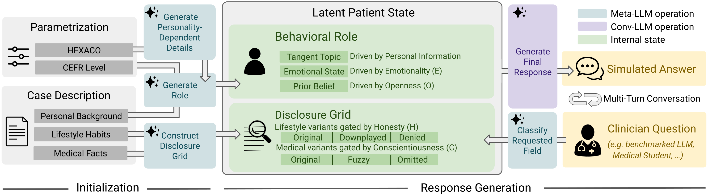
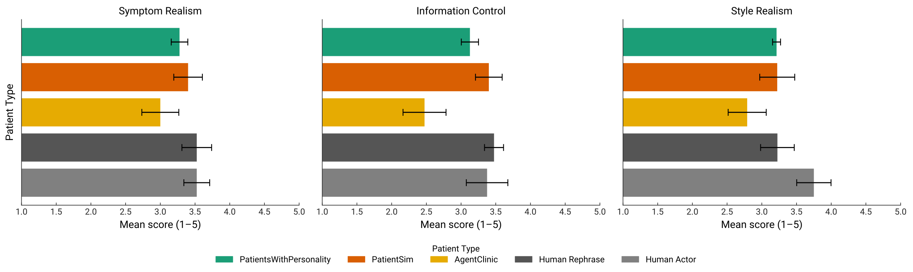
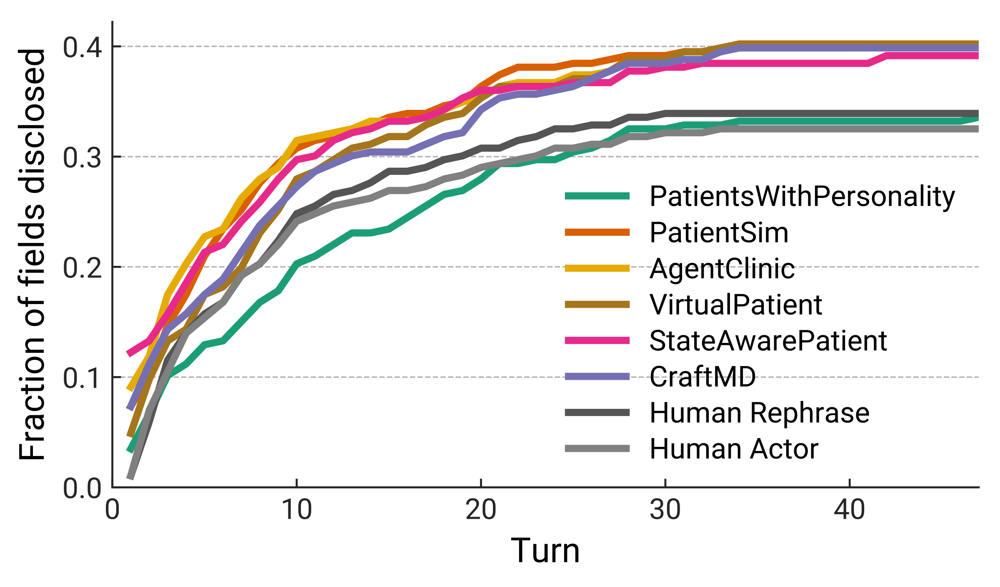
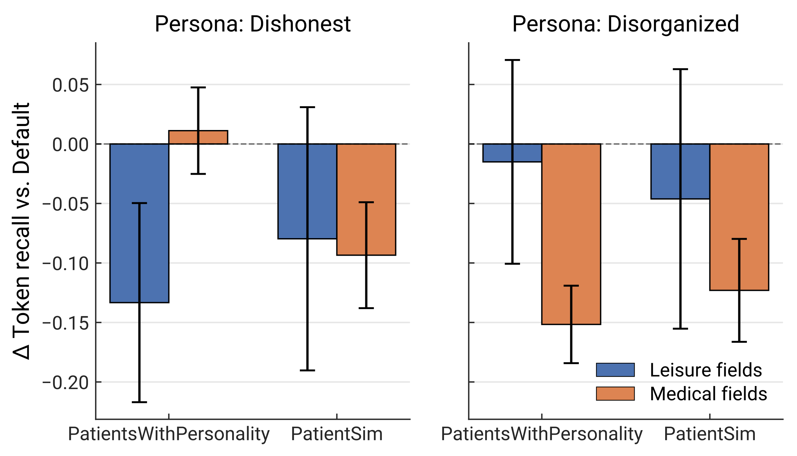

Realistic Patient Simulation through Controlled Diversity and Selective Disclosure
arXiv preprint, 2026
Testing clinical LLMs usually means slow, expensive user studies — or patient simulators that don’t behave like real patients. Existing simulators tend to overshare, cooperate uniformly, and flatten the natural variety of how people actually talk to a doctor.
PatientsWithPersonality (PWP) takes a different route: it parametrizes each virtual patient over HEXACO, the six-dimensional model psychologists use to describe human personality. Those six axes give fine-grained, recoverable control over how a patient discloses information, how cooperative they are, and how they carry a conversation — all over a shared latent patient state.
The result is a simulator clinicians judge nearly as realistic as recorded human actors, and clearly ahead of prior work, while being flagged as “too informative” far less often. Configured personalities are recoverable by both clinicians and an autorater, cover a substantially wider behavioral range than the closest baseline, and curb the oversharing that makes benchmarks too easy.
Six personality axes give fine-grained, recoverable control over how a patient behaves.
Patients reveal information only when prompted, preventing the unprompted oversharing of prior simulators.
Configured traits span a substantially wider behavioral footprint than the closest baseline.
Judged nearly as realistic as recorded human actors in a blinded clinician study.

Initialization. Personal background, lifestyle habits, and medical facts are combined with HEXACO traits and a CEFR language level into a behavioral role (tangent topics, emotional state, prior beliefs) and a disclosure grid — lifestyle variants (truthful / downplayed / denied) gated by Honesty-Humility and medical variants (original / fuzzy / omitted) gated by Conscientiousness.
Response generation. For each clinician question, a meta-LLM classifies which field is requested, the latent state selects the appropriate disclosure variant, and the conversational LLM produces the final response — repeating across the multi-turn conversation so disclosure evolves naturally and the patient never overshares.



PWP turns patient simulation into a controllable axis of evaluation rather than a fixed backdrop. By dialing HEXACO traits, the same clinical case can probe how a diagnostic system copes with guarded, anxious, talkative, or unreliable patients — surfacing failure modes that uniform, overly cooperative simulators hide entirely.
We see several directions ahead: scaling to larger and more diverse case sets, grounding personalities in real de-identified encounters, extending beyond history-taking to physical exams and multimodal cues, and adding longitudinal patients whose state evolves across visits. More broadly, steerable patient simulation offers a safe, reproducible substrate for stress-testing medical LLMs before they ever reach a clinic — and a path toward training communication skills for both AI systems and clinicians.
@article{schlager2026patients,
title = {Patients With Personality: Realistic Patient Simulation
through Controlled Diversity and Selective Disclosure},
author = {Schlager, Moritz and Jungmann, Friederike and Schmidgall, Samuel
and Raffler, Philipp and Hartl, Franziska and Wende, Eva
and Ro{\ss}m{\"u}ller, Paula and Ketzer, Conrad and Hassidim, Avinatan
and Webster, Dale R. and Matias, Yossi and Liu, Yun
and Rueckert, Daniel and Schaekermann, Mike and Hager, Paul},
journal = {arXiv preprint arXiv:2606.17441},
year = {2026}
}